Explore Oviedo
A Brief History
Oviedo became capital of the Asturian kingdom in the ninth century when Alfonso II established his court around a monastery dedicated to San Salvador. The cathedral's Cámara Santa guarded relics linked to the True Cross and drew pilgrims whose routes later fed the Camino de Santiago. Medieval walls, baroque squares such as Plaza del Fontán, and nineteenth-century civic buildings around Teatro Campoamor record how the city remained Asturias' administrative seat after the Christian kingdoms of the north joined Castile.
Attractions Map
Top Sights & Activities
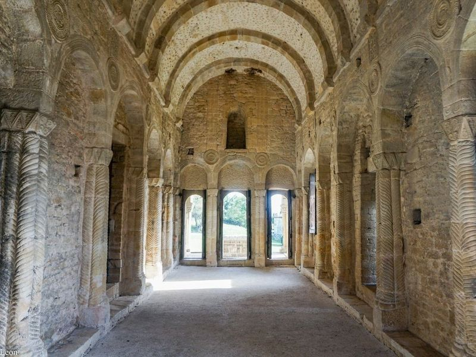
Iglesia de Santa María del Naranco
King Ramiro I ordered this hall on Monte Naranco about 842 as a palatine building before its conversion to a church in the twelfth century. The two-storey sandstone structure with exterior stairways exemplifies Asturian pre-Romanesque design and was listed with other Oviedo monuments as UNESCO World Heritage in 1985. Guided visits start here and continue to the nearby church of San Miguel de Lillo under joint ticketing.
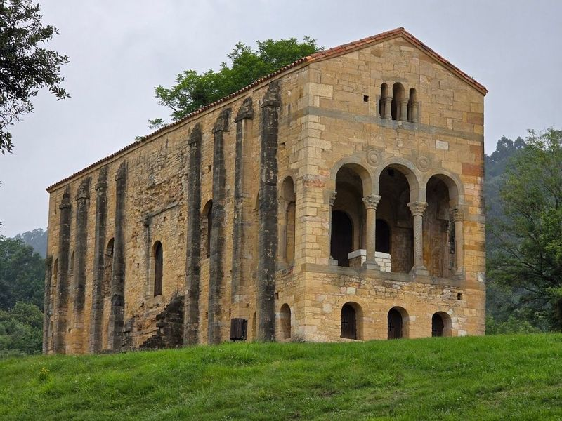
Church of San Miguel de Lillo
Ramiro I founded this hilltop church around 842 as a palatine chapel roughly one hundred metres from Santa María del Naranco. Much of the nave collapsed in later centuries, leaving a shortened aisle with pre-Romanesque capitals and blind arcading. UNESCO inscribed the monument in 1985 together with the other Asturian pre-Romanesque sites on Monte Naranco, and entry is included in the joint Naranco ticket sold at Santa María.
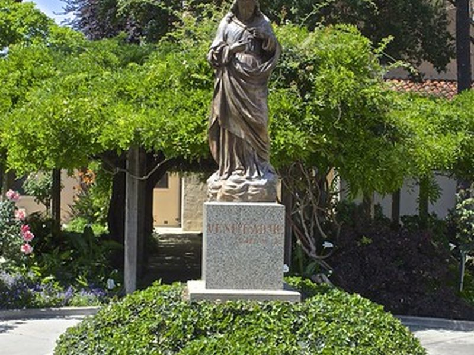
Sacred Heart of Jesus Monument
A large Christ statue crowns the upper slopes of Monte Naranco above the pre-Romanesque churches and the city spread below. Erected in the twentieth century as a devotional landmark visible from central Oviedo, it terminates the approach road used by buses and walkers heading to Santa María del Naranco. The pedestal terrace gives a wide view across the cathedral towers and the surrounding Asturian hills.
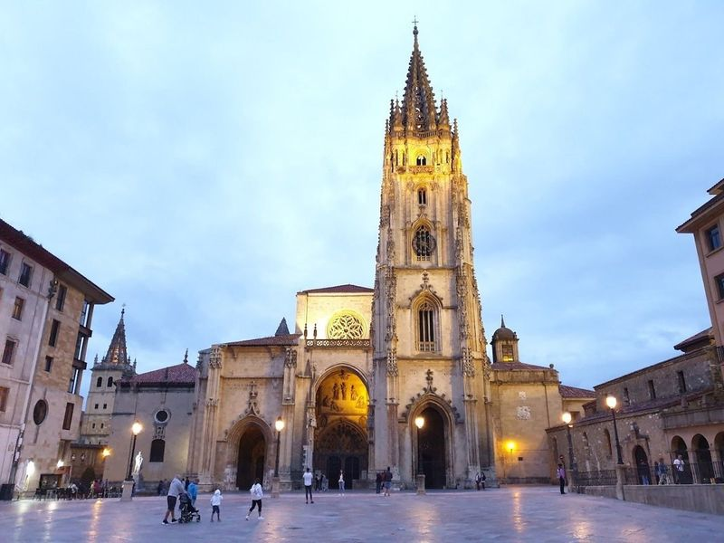
Cathedral of San Salvador
Founded beside Alfonso II's ninth-century palace church, the cathedral of San Salvador houses the Cámara Santa with medieval reliquaries that made Oviedo a pilgrimage goal. Its Gothic tower, baroque chapels, and cloister museum document Asturian church patronage from the early kingdom through early modern times. The cabildo manages cultural visits to the nave, holy chamber, museum, and cloister separately from liturgical services.
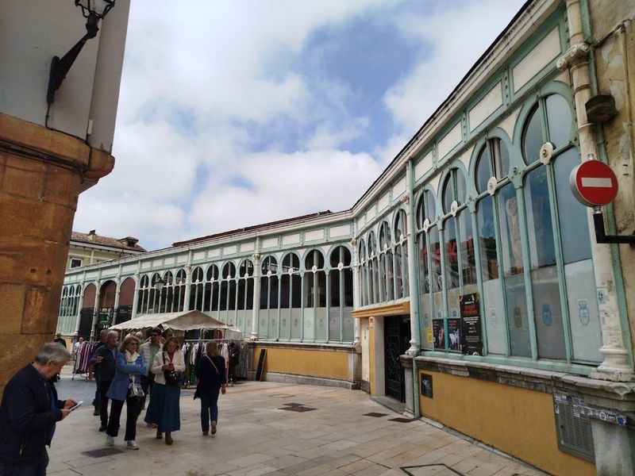
Mercado El Fontán
The Mercado El Fontán occupies a nineteenth-century iron and masonry hall designed by Javier Aguirre on the edge of the old town. Stalls sell Asturian cheese, cider apples, fish from the Cantabrian coast, and seasonal produce under a timber and glass roof. Flower sellers, book dealers, and antique vendors line the surrounding lanes, making the market a working centre of Oviedo's daily food trade.
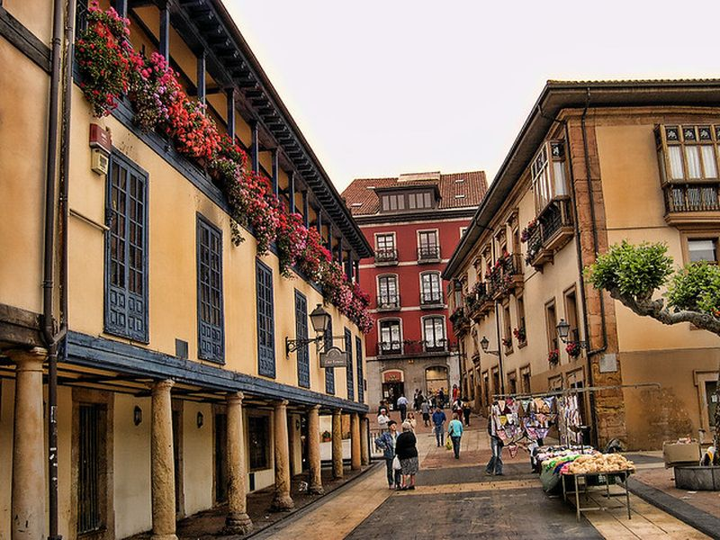
Plaza del Fontán
Plaza del Fontán forms the porticoed square in front of the market of the same name in Oviedo's historic core. Stone arcades shelter café tables and shopfronts that have served the neighbourhood since the square was laid out beside the city walls. Weekly markets and festival stalls still fill the paving, linking the cathedral quarter with the cider bars and lanes of the old town.
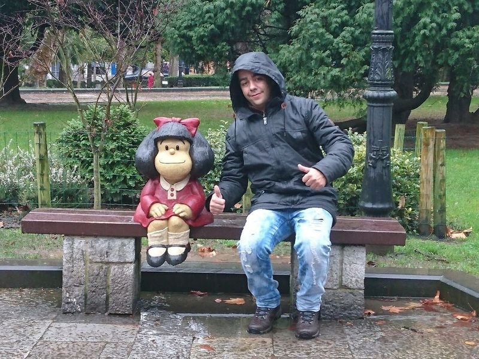
Estatua de Mafalda
Sculptor Pablo Irrgang cast this bronze figure of the Argentine cartoon character Mafalda seated on a bench in Campo de San Francisco. Installed in 2014, it recalls the international readership of Quino's strips and Oviedo's twinning links with Buenos Aires. The statue sits among mature trees and flower beds in the city's principal central park, where municipal events and weekend gatherings take place.
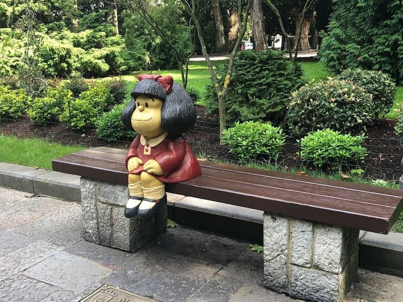
San Francisco Park
Campo de San Francisco developed from a Franciscan convent garden into Oviedo's main urban park in the nineteenth century. Paths circle lawns, a pond, and a bandstand while peacocks roam among magnolias and chestnuts. The park borders the Museum of Fine Arts of Asturias and several academic buildings, giving residents a shaded route between the cathedral quarter and the university district.
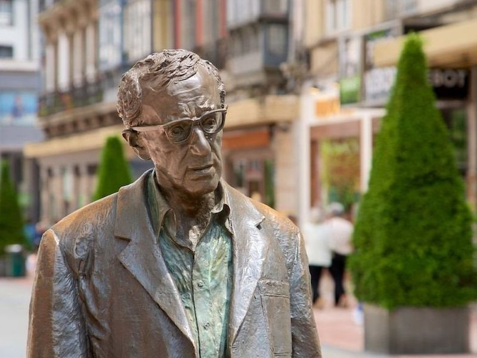
Estatua de Woody Allen
Oviedo erected this bronze statue in 2003 on Calle Milicias Nacionales after the filmmaker received the Prince of Asturias Award for the Arts. Allen had filmed sequences of Vicky Cristina Barcelona in the city, and the life-size figure shows him mid-stride with characteristic glasses and slouched posture. The monument stands near San Francisco park and is one of several contemporary sculptures placed along central shopping streets.
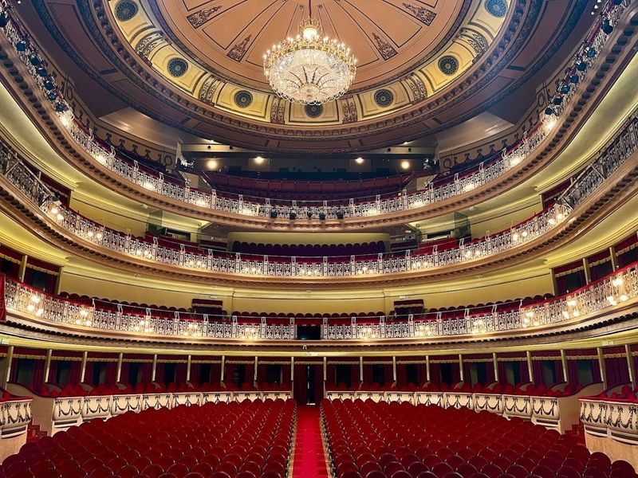
Teatro Campoamor
Opened in 1892 and named for the Asturian poet Ramón de Campoamor, this neoclassical theatre on Calle Pelayo is the home of the Princess of Asturias Awards ceremony and the annual opera season. The horseshoe auditorium, red-and-gold interior, and stage house were renovated in the late twentieth century for touring opera, ballet, and concert programs managed by the Ayuntamiento de Oviedo.
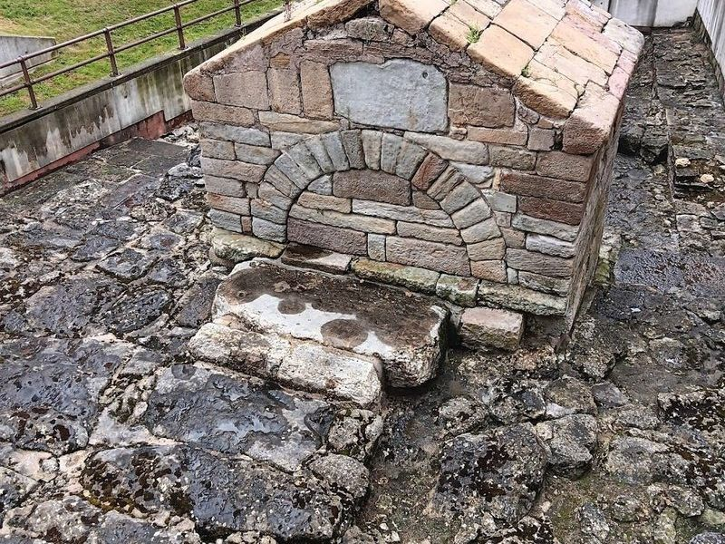
Foncalada's Fountain
Alfonso III ordered this stone fountain channel in the ninth century to bring drinking water from a hillside spring into the walled town. A barrel vault frames the carved façade with its cross and Latin inscription, making it a rare surviving pre-Romanesque civil work. UNESCO listed the Foncalada in 1998 among Oviedo's pre-Romanesque monuments, and the structure still stands beside a busy central junction.
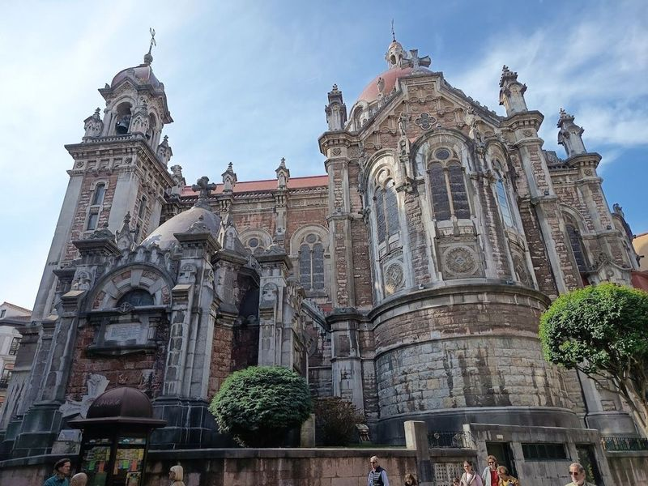
Basilica of St. John The Real
San Juan el Real rose in the fourteenth century with patronage from the Castilian court and later Baroque remodelling to its twin-towered façade. The basilica stands on the edge of Campo de San Francisco and retains gilded retablos, a cloister, and chapels used by the Trinitarian order. Its choir and side aisles illustrate how late medieval Oviedo merchants funded church expansion beyond the cathedral precinct.
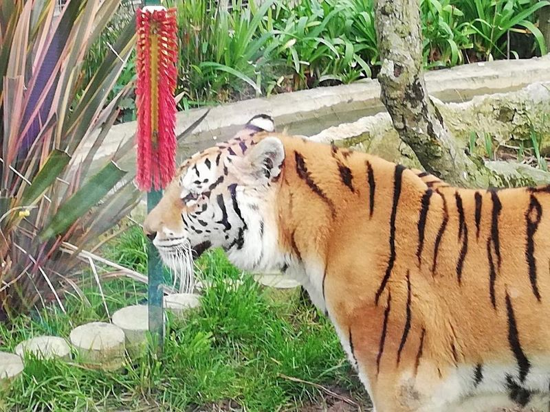
Zoo El Bosque
Opened in 2008 at Los Molinos in the parish of San Esteban de las Cruces, this compact zoo keeps rescued primates, Iberian wolves, lynxes, and exotic birds in wooded enclosures a few kilometres from central Oviedo. Interpretation panels explain conservation breeding and rehabilitation work carried out with regional wildlife authorities. Paths loop through native plantings so visits typically last between ninety minutes and two hours.
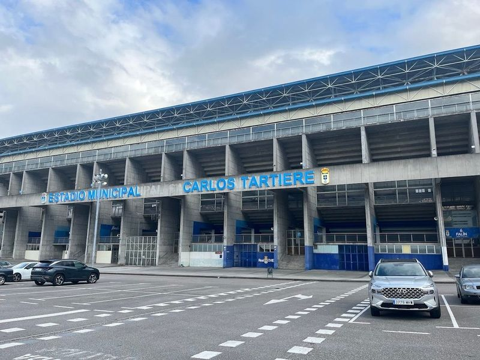
Carlos Tartiere Stadium
Built in 2000 as a municipal stadium for Real Oviedo, the Estadio Carlos Tartiere seats about thirty thousand spectators around a 105-by-68-metre pitch west of the centre. The club's museum and guided Experiencia RO tours pass through the press room, mixed zone, dressing rooms, and pitch. The arena hosts league fixtures and occasional concerts while serving as the home ground for the city's principal football club.